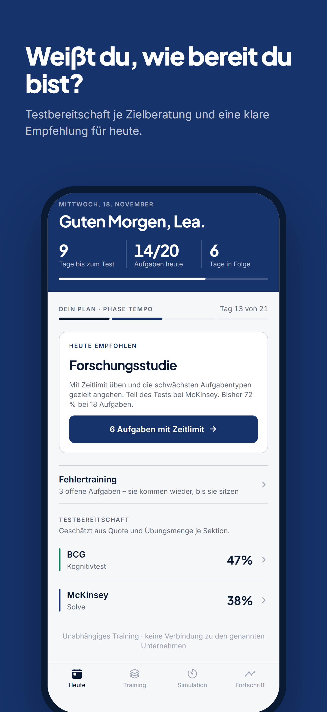

Bestehe den Online-Test deiner Wunschberatung.
Alle Aufgabentypen der Consulting-Assessments, ein Lösungsweg zu jeder Aufgabe und Simulationen unter echtem Zeitdruck.
Jetzt kostenlos ausprobierenApp bald im App Store · kostenlos starten · 5 Aufgaben pro Typ und Tag

Fünf Aufgaben. Jetzt.
Gemischte Aufgaben aus dem Kognitivtest-Format – mit Lösungsweg nach jeder Antwort. Bei jedem Start neu erzeugt.
Jeder Aufgabentyp einzeln.
Kognitivtest-Schnelltest
20 Fragen in 7,5 Minuten – mit Triage-Auswertung.
LogikZahlenreihen
Differenzen, Faktoren, Primzahlen.
ZahlenTextaufgaben & Altersrätsel
Zeit, Dreisatz, Brüche, Altersketten.
LogikWürfelnetze
Gegenüberliegende Flächen erkennen.
LogikBuchstabenlogik
Alphabet, Verschieben, Reihenfolge.
Alle Trainer11 Trainer & Werkzeuge
Syllogismen, Wortschatz, Regelketten, Matrizen und mehr.
Fünf Testformate.
Jedes mit eigener Strategie.
Online-Assessments unterscheiden sich je nach Beratung stark – in Aufgabentypen, Tempo und Regeln. Die App simuliert die Formate, die Bewerber aus deutschen Büros berichten, unter echtem Zeitdruck und wertet sie nach Aufgabentyp aus.
| Kognitivtest | 80 kurze Logik-, Sprach- und Zahlenaufgaben in 30 Minuten, freies Springen, keine Minuspunkte. Mit Triage-Training: Was löst du sofort, was überspringst du? |
| Solve-Format | Spielbasiertes Problemlösen: Datenrecherche mit Hypothesen, Optimierung unter Nebenbedingungen, Ökosystem. |
| SOVA / TestGorilla | Numerisches und logisches Denken, kritisches Lesen und Situational Judgement. |
| Analytischer Test | Datenanalyse, Kopfrechnen und Zahlenreihen mit Business-Bezug. |
| SHL-Format | Der klassische Eignungstest vieler weiterer Beratungen und der Big 4. |